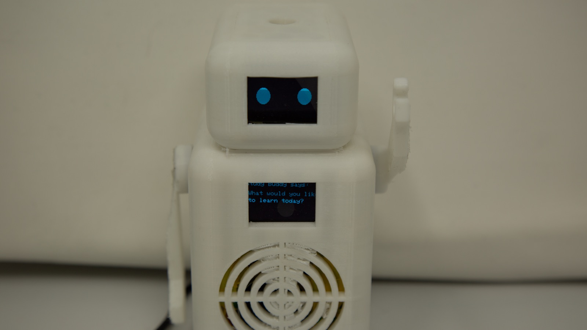
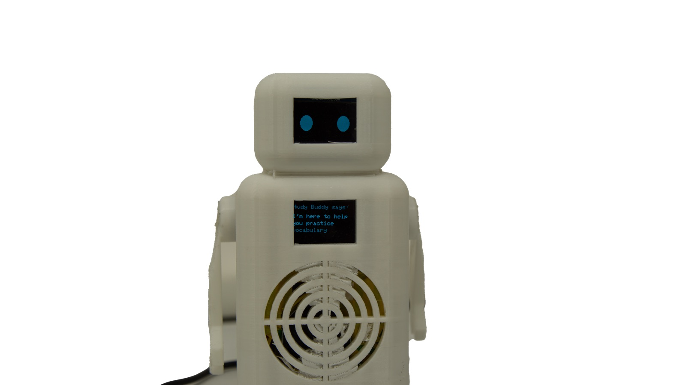
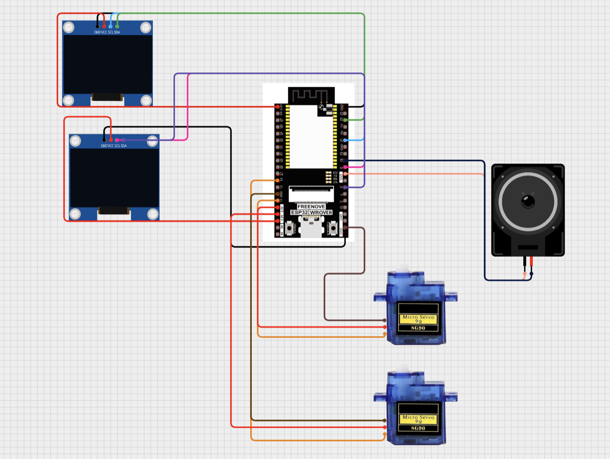
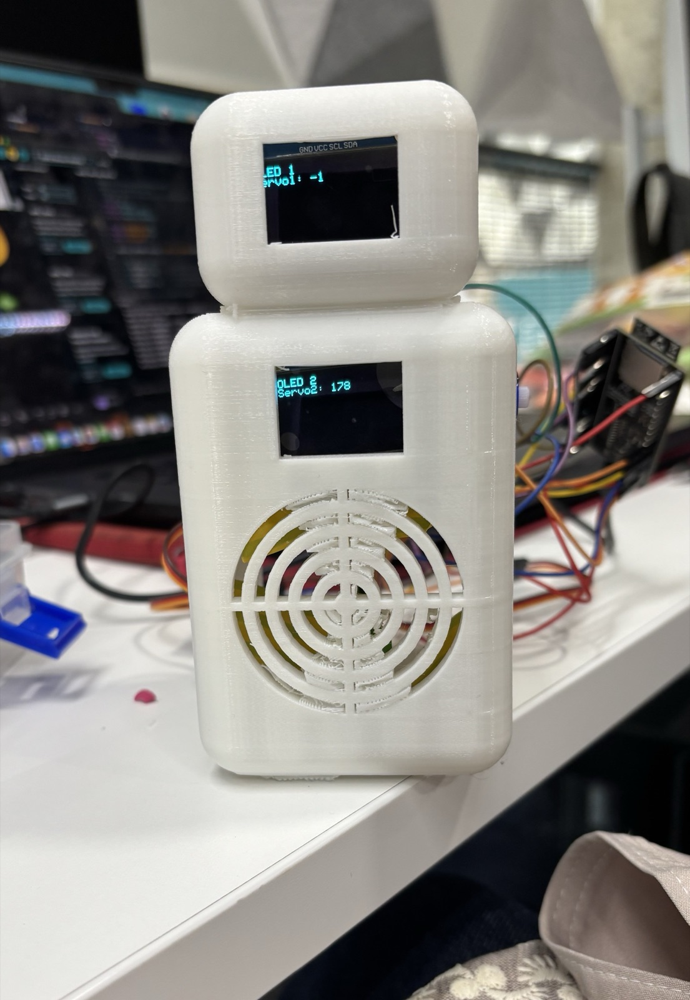

Physical AI · embedded hardware · educational robotics
AI Study Buddy
StudyBuddy is a small robot that helps children learn. It listens to spoken answers, adjusts the difficulty to how each child is doing, and responds with facial expressions on two OLED screens, sounds and servo movements.

Learning with a body, not just a screen
I wanted an AI study companion that helps students learn through personalised quizzes, flashcards and study schedules, with progress tracking and a learning path that adapts as they go. StudyBuddy is the physical version of that idea: ESP32 hardware, OLED displays and servos combined with AI software, giving children visual, audio and physical feedback in real time.
Goals
- Design an interactive robot that uses AI to personalise lessons in real time.
- Make learning more engaging through speech recognition, movement and responsive feedback.
- Bridge the gap between digital and hands-on learning.

Speech recognition
Understands spoken questions and commands, processed offline with Vosk.
Adaptive learning
Personalises content based on each student's performance using Bayesian skill estimation.
Physical interaction
Responds with facial expressions, sounds and servo-driven movements.
Knowledge base
Looks up facts and educational content through the Wikipedia API.
Hardware and software
Hardware
- ESP32: the core microcontroller that manages every interaction.
- Two OLED displays: one for facial expressions, one for text.
- Servo motors: physical movements and gestures, like nodding.
- Speaker: audio feedback and spoken responses.
Software pipeline
- Speech recognition: Vosk for offline speech-to-text.
- Language processing: TinyLlama through Hugging Face Transformers.
- Knowledge base: Wikipedia API for factual answers.
- Adaptive learning: a lightweight Bayesian skill estimation algorithm.

The Python code is split into two main classes: one that talks to the hardware and one that runs the learning experience.
class ESP32Communicator: # Handles communication with ESP32 hardware # Controls displays, servos, and audio class StudyBuddyAI: # Main AI companion managing the learning experience # Handles speech recognition, response generation
Tracking what each child knows
StudyBuddy keeps a skill estimate between 0 and 1 for every subject and topic. After each answer it nudges that estimate up or down. A "surprise factor" makes the update bigger when the result is unexpected, such as a correct answer on a topic the child was struggling with.
# Key adaptive learning algorithm (simplified) def update_subject_skill(self, subject, topic, correct): # Current estimates current_skill = self.profile['skills'][subject][topic] # Bayesian update weights surprise_factor = 1.5 if (correct and current_skill < 0.5) or \ (not correct and current_skill > 0.5) else 1.0 # Update skill estimate if correct: new_skill = current_skill + (1 - current_skill) * 0.2 * surprise_factor else: new_skill = current_skill * (1 - 0.2 * surprise_factor) # Store updated skill self.profile['skills'][subject][topic] = new_skill
This lets the robot:
- Scale difficulty to the skills a child has shown.
- Recommend practice that targets weak areas.
- Adapt to different learning styles (visual, auditory, kinesthetic).
What a session looks like
Interaction flow
- Startup: a friendly greeting with animation and sound.
- Main menu: learning modes are chosen by voice.
- Learning activities: Q&A, vocabulary, maths and science.
- Feedback: expressions, sound and movement together.

Example: science quiz
StudyBuddy: "Let's learn about photosynthesis! This is the process plants use to make food using sunlight. Would you like to take a mini-quiz?" User: "Yes" StudyBuddy: [Displays a thinking expression] "Great! Here's your first question: What do plants need for photosynthesis? Is it: A) Just water, B) Sunlight, water, and carbon dioxide, or C) Soil only?" User: "B" StudyBuddy: [Displays happy expression, servo nods] "Correct! Plants need sunlight, water, and carbon dioxide to make their own food through photosynthesis. They release oxygen as a byproduct, which we breathe."
Example: adaptive maths
StudyBuddy: "Based on your previous answers, I'll give you a slightly more challenging subtraction problem. What is 43 - 18?" User: "25" StudyBuddy: [Displays thinking face] "Let's check that... I got a different answer. Let me help you work through this. First, we can subtract 3 - 8, but since 8 is larger than 3, we need to borrow. 40 + 3 becomes 30 + 13. Now 13 - 8 = 5, and 30 - 10 = 20. So 43 - 18 = 25. You were right! Great job!" [System updates user's math subtraction skill from 0.65 to 0.71]
Testing and findings
88% recognition
Speech recognition was 88% accurate in quiet environments.
Movement matters
Physical interaction noticeably increased how engaged students were.
What students asked for
Clearer instructions and more mechanical movement.
Key findings
- AI-driven personalisation made students more engaged.
- Physical interaction through gestures and expressions helped them focus.
- Combining visual, audio and physical feedback makes learning more inclusive and accessible.
What I'd build next
More capable body
A Raspberry Pi 5 for better local processing, a more mechanical body with more movement, and an ESP32 camera module for visual recognition.
Smarter responses
Emotion recognition from facial and tonal analysis, more varied lesson plans, and a cloud-AI hybrid that balances performance and privacy.
More learners
Multi-language support, interactive games and story-based activities, and field testing in classrooms with diverse learners.
Stack
See it running
A walkthrough of StudyBuddy's voice interaction, expressions and movement.